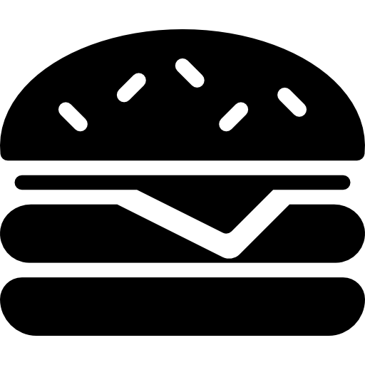

Вкусный бургер


Food & Joy — это не просто бургерная, а магазин еды с доставкой, где каждый найдёт что-то по душе. У нас есть всё, чтобы утолить голод: сочные бургеры с говяжьей котлетой, хрустящая картошка фри, золотистые наггетсы, ароматная пицца на тонком тесте, большие сэндвичи с несколькими слоями начинки и освежающие милкшейки, которые так приятно пить в жаркий день.
Мы готовим из свежих ингредиентов, которые привозим каждое утро. Булочки для бургеров печём сами — без заморозки и консервантов. Мясо, овощи и зелень проходят строгий отбор, чтобы каждый заказ был вкусным и безопасным. Наши повара знают, как сделать бургер сочным снаружи и внутри, а пиццу — с хрустящей корочкой.
Всё началось в 1967 году, когда прабабка нашего основателя, Фудинина Джойинина, в период неурожая зажарила свою единственную корову. Отступать было некуда — она сделала из неё первый бургер. Еды хватило для того, чтобы поделиться с соседями. Так появилась первая маленькая бургерная на окраине города, где всегда пахло свежим мясом и тёплыми булочками.
С тех пор прошло больше полувека. Семейный рецепт передавался от поколения к поколению, а маленькая бургерная выросла в магазин еды с доставкой Food & Joy, имя которому подарила пробабка Фудинина Джойинина. Мы по-прежнему готовим так, как она учила: из свежих ингредиентов, с любовью и без спешки. Булочки печём сами, мясо отбираем вручную, а соусы делаем по тем самым старым рецептам.
Сегодня в меню не только бургеры. Но философия осталась прежней: еда должна быть вкусной, свежей и приносить радость. Доставляем по всей Москве за 30 минут — чтобы каждый мог попробовать кусочек той самой истории.
Уже проголодались? Переходите по кнопке ниже в каталог нашей еды или ознакомьтесь с нашими хитами!
Хочу покушать!

Доставляем по всей Москве за 30 минут. Курьеры ездят на моноколёсах, поэтому еда приезжает горячей и свежей. Если опоздаем — следующий заказ за наш счёт.
Работаем напрямую с поставщиками, без посредников. Поэтому цены ниже, чем у конкурентов. А комбо-наборы делают заказ ещё выгоднее.
Каждое утро привозим свежее мясо, овощи и зелень. Булочки печём сами — без заморозки и консервантов. Всё, что не продали за день, списываем
Наши повара и курьеры работают вместе уже несколько лет. Каждый знает своё дело и любит его. Поэтому заказы собираются быстро и без ошибок.